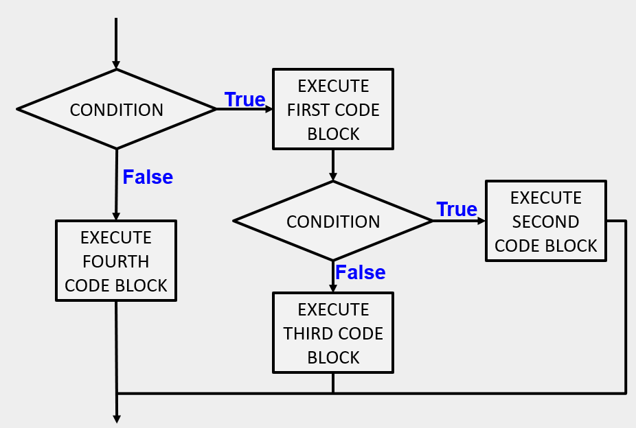

One conditional can also be nested within another. For example, assume we have two integer variables, x and y. The following pattern of selection shows how we might decide how they are related to each other.
if x != y:
print("x and y are not equal")
if x > y:
print("x is greater than y")
else:
print("x must be less than y")
else:
print("x and y are equal")
The outer conditional contains two branches. The second branch (the else from the outer) contains
another if statement, which has two branches of its own. Those two branches could contain
conditional statements as well.
The flow of control for this example can be seen in this flowchart illustration.
Here is a complete program that defines values for x and y. Run the program and see the result. Then change the values of the variables to change the flow of control.
Note: In some programming languages, matching the if and the
else is a problem. However, in
Python this is not the case. The indentation pattern tells us exactly which else belongs to which if.
© Copyright 2018 LTC Tom Babbitt, Kyle King, Chip Schooler, Brad Miller, David Ranum, Originally created using Runestone Interactive.